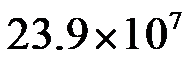
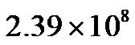
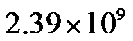
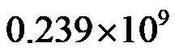
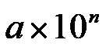
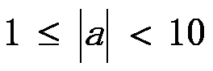
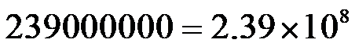
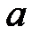

2023年北京中考数学 第1题 解析
1. 截至2023年6月11日17时，全国冬小麦收款2.39亿亩，进度过七成半，将239000000用科学记数法表示应为（ ）
A.

B. 
C. 
D. 
【答案】B
【解析】
【分析】用科学记数法表示绝对值较大的数时，一般形式为

，其中
，为整数，且比原来的整数位数少1，据此判断即可．【详解】解：

，故选：B．
【点睛】本题考查了科学记数法的表示方法，用科学记数法表示绝对值较大的数时，一般形式为，其中，为整数，且比原来的整数位数少1，解题的关键是要正确确定

和的值．